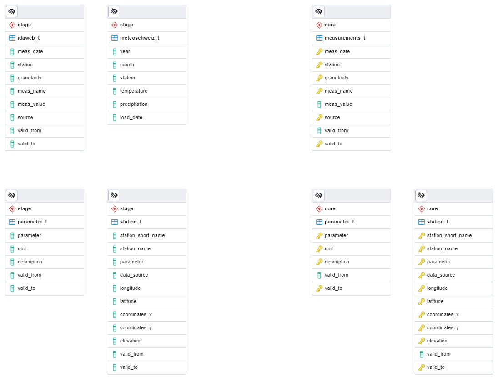

Following programms and modules are required to run KlimaAPI
| modules |
version |
| dash_bootstrap_components |
0.12.2 |
| SQLAlchemy_Utils |
0.36.8 |
| Flask |
1.1.2 |
| dash |
1.19.0 |
| msedge_selenium_tools |
3.141.3 |
| statsmodels |
0.12.0 |
| urllib3 |
1.25.11 |
| plotly |
4.14.3 |
| dash_core_components |
1.3.1 |
| numpy |
1.19.2 |
| selenium |
3.141.0 |
| SQLAlchemy |
1.3.20 |
| requests |
2.24.0 |
| dash_html_components |
1.0.1 |
| pytest |
0.0.0 |
| lxml |
4.6.1 |
| pandas |
1.1.3 |
| python_dateutil |
2.8.1 |
| scikit_learn |
0.24.2 |
Add images for clarity between steps
- Install Python
- Install all required modules for Klima API (Requirements)
- Install Postgres
- Start flask app (Instruction)
- Open webbrowser
- Navigate to localhost:5000
- Configure database connection string (Insert image of config page)
- Navigate to database tab of administration overview
- Press action button to connect to database
- Open pgAdmin or equivalent
- Import database
- Uncomment dashboard creation line in app.py
- Start server (Instruction)
- Navigate to localhost:5000/admin
- Use app
Add images for clarity between steps
- Install Python
- Install all required modules for Klima API (Requirements)
- Install Postgres
- Start flask app (Instruction)
- Open webbrowser
- Navigate to localhost:5000
- Configure database connection string (Insert image of config page)
- Navigate to database tab of administration overview
- Press action button to connect to database
- Press action button to create database tables
- Run ETL load
- Run Core load
- Stop server
- Uncomment dashboard creation line in app.py
- Start server (Instruction)
- Navigate to localhost:5000/admin
- Use app
With VSCode and Edge
- Install Python
- Install all required modules for Klima API (Requirements)
- Install Postgres
- Open VSCode
- Launch debug config FE + Flask
- Configure database connection string (Insert image of config page)
- Navigate to database tab of administration overview
- Press action button to connect to database
- Press action button to create database tables
- Run ETL load
- Run Core load
- Stop server
- Uncomment dashboard creation line in app.py
- Launch debug config FE + Flask
- Use app
Command Prompt
> set FLASK_APP=app.py
> set FLASK_ENV=production
> flask run
PowerShell
> $env:FLASK_APP = "app.py"
> $env:FLASK_ENV = "production"
> flask run
Linux (untested)
export FLASK_APP=app.py
export FLASK_ENV=production
flask run
Important, start anaconda / pip env before starting flask app
In order to get new data selenium requires a browser driver to scrape websites
Browser version are checked automatically
Installation as follows:
Edge
- Navigate to localhost:5000/admin
- Press
Driver name
- Press
Download driver
Chrome
- Navigate to localhost:5000/admin/driver/Chrome?headless=false
- Open idawebConfig.xml
- Add new parameter with name, group and granularity
- Restart Server
- Navigate to localhost:5000/admin/database
- Click on idaweb_t
- Run increment load
In case of blocked idaweb credentials in code
- Open webscraping.py
- Change credentials at the start of the file
webscraping.py contain both meteoschweiz and idaweb scraping functions
- Instanciates blueprint for all subAPI's in API folder
- Contains main routes for API
- All blueprint for different parts of the API
- Contains main admin page routes
- Contains database routes on admin page
- Contains all database interface routes
- Contains all scraping routes
- Handels all sse streams to the front end
db.py handels following:
- All interaction with database
- Database creation
- Table creation
- Selects
- Inserts
- Creates announcer for front end
- Creates messages from database status and sends them over sse to front end
Helper file with functions for POST and GET requests
- Helper functions for idaweb file download
- Contains idaweb parameters to download and refresh
- Used for developement as temporary storage of configs
messageAnnouncer.py contains following:
- sse
- Queueing
- Formating
responseDict.py contains following:
- Response sending for front end
- Button disabling for FE
- Progressbar for FE
- Start materialized view refresh after data inserts
abstractDriver.py handels all selenium driver interactions
- Driver install
- Front end information about driver status
dashboard.py handels following:
- Creation of dashboard and structure
- Selection of data displayed in dashboard
- Wrangling of selected data
- Callbacks handeling for interaction
story.py handels following:
- Creation of story and structure
- Selection of data displayed in story
- Wrangling of selected data
Contains all webscraping unit tests
Contains all database unit tests
TODO fix wording and structure
- Database is divided into two main schemas, Stage and Core
- All tables have corresponding materialized views for number of rows and last update
- Data is copied from left to right
- Text files / Web into stage tables
- Stage tables into Core tables
Stage schema contain all new data
- Can contain duplicate entries
- No primary keys
- Raw data
- Cannot contain duplicate entries due to natural primary key violation
- Data is indexed for faster selects
- idaweb_t & meteoschweiz_t is merged into measurements_t table
- Colums get added for datasource description
- Data gets parsed into format used for future analysis
- Core data never gets deleted, can be used to add new data
